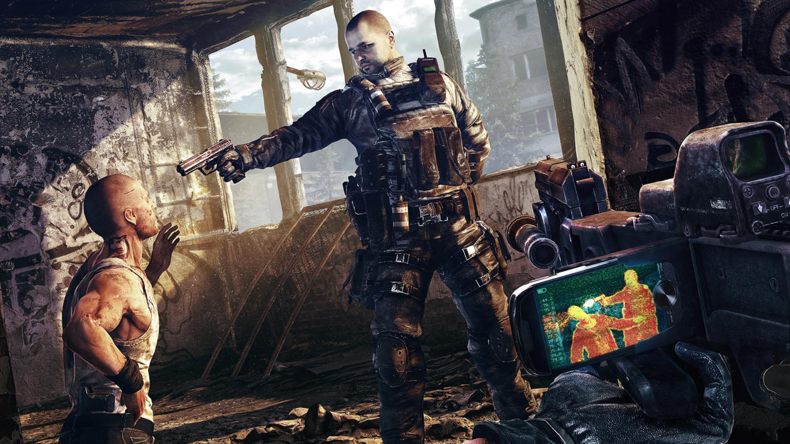

Get Even Composer Talks About The Game's "Melancholic, Oppressed, Happy" Music
Q&A: We speak with Olivier Derviere about the music he wrote for the intriguing-looking FPS game.

GameSpot spoke with Deriviere about the soundtrack for Get Even. He told us about how he became attached to the project and revealed that he turned down offers from AAA franchises to work on the game because Get Even is a "very personal game, unlike any other."
Another interesting element to the music is that it's all connected to the story...somehow.
"Everything in the music makes sense and has a purpose that connects to the story of the game," Deriviere said. "If you hear a solo violin, if you hear a clock, if you hear breathing…etc…it is all connected.
He also discussed the "musical journey" players will get to experience with Get Even, touching on all manner of tones and feelings, including "melancholic, oppressed, [and] happy."
What kind of preparation did you do for this project?
This was very challenging work and preparation was key. I had to do a lot of research on both an artistic and technical level to make sure it would meet what the game needed. To merge real time generated music with pre-recorded music was really fun because we had so much more flexibility. But what really mattered to me, and for any game I score, is to be meaningful with what I am doing. Writing music just for the sake of adding a musical layer to a game has never been enough to me and Get Even is so mesmerizing that I had to make sure everything you would hear is connected to the story. Everything in the music makes sense and has a purpose that connects to the story of the game. If you hear a solo violin, if you hear a clock, if you hear breathing…etc…it is all connected.
What were some of the themes and tones you wanted to accentuate with your music and how did you go about delivering on those? I heard regret and guilt are two themes of the game.
Nobody can anticipate what this game is about but yes, the main themes are regret and guilt. Time also has a big part to play. When you look at some screenshots of the game or the trailer you might think it is a horror genre game. There is some of that but it's maybe less than 10 percent of the experience. As well as the shooting part. Get Even is a very narrative-driven game that will play with your mind and, hopefully, talk to your heart and soul. That's what my music is definitely for. It is a very intimate story; there is no world to be saved, no zombie killing, etc… It's about making mistakes and the utter feeling of being powerless against them.
What kind of access did you have to the development team at The Farm 51 during the production of your score? And was it a very collaborative effort?
My relationship with a studio I work with is like the ones you can have in the movies such as Spiellberg/Williams, Burton/Elfman, Nolan/Zimmer... It is an intense collaboration to provide the best experience we can to players. I think this is the only approach for me to really capture the vision and enhance it with music.
Writer : Berke KIRAN